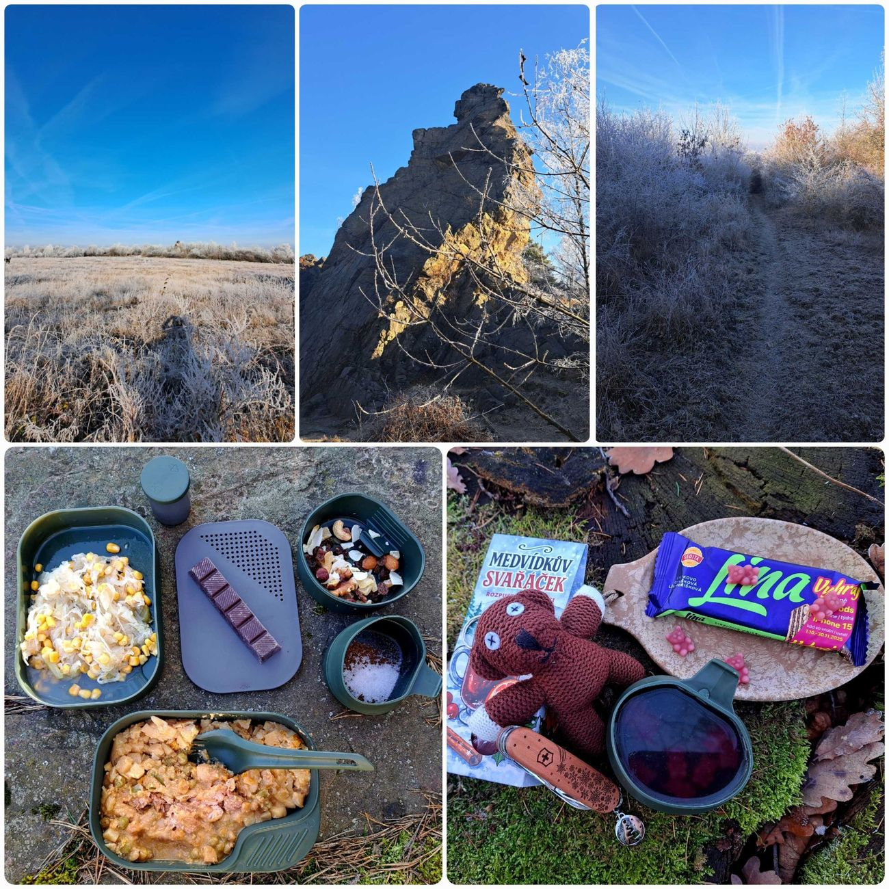
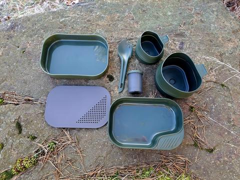
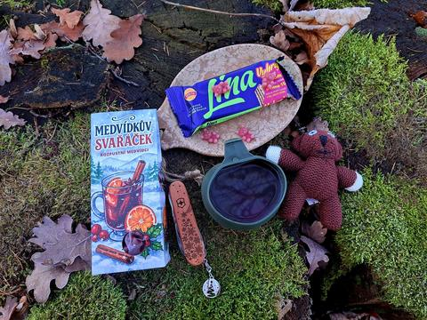

Potulka
Zimní krása a pomíjivost






27. 12. prosince, první sobota po Vánocích, kdy člověk ještě pořád cítí vůni cukroví, ale už má potřebu vyvětrat hlavu i tělo, mě vítá mrazivé ráno. Teploměr ukazuje -5 °C, což je přesně ta teplota, kdy se člověk musí dlouho rozhodovat a nakonec prostě nahodí batoh a vyrazí do lesa, aby si užil počasí, které má konečně charakter.
Pod nohama to křupe jako čerstvě upečené rohlíky a všude kolem se třpytí jinovatka. Zimní pohádka bez přikrášlení, jen taková, jakou umí udělat příroda, když se jí chce. K tomu jasno, sluníčko a ticho, které by se dalo krájet.
Můj dnešní plán je navštívit Ostrou hůrku u Starého Plzence což je skalní útvar známý jako "plzeňský Matterhorn" díky své podobnosti s švýcarským Matterhornem, přestože je vysoká jen 20 metrů a tvoří ji buližník (silicit).Před dvěma a půl měsíci jsme tu měli brigádu a výsledky práce jsou pořád vidět — čisté cesty, upravené okolí, prostě místo, které dýchá péčí.
Dávám si tu oběd z BDP — Bratislavskou vepřovou s bramborem, která v tomhle mrazu chutná dobře — a k tomu testuju novou jídelní sadu od Wildo. Funguje skvěle, a hlavně… vypadá to, že se mnou ještě něco zažije i když samozřejmě plánuji nějakou menší úpravu nebo její doplnění.
Pak scházím úvozem dolů. Ten je pořád krásně bílý, ale jak sluníčko stoupá, jinovatka začíná tát a kapky se lesknou jako drahokamy. Každý krok je jiný než ten předchozí — jako by se krajina měnila přímo přede mnou. Cestou domů si dávám ještě pauzu na medvídkův svařáček, protože k zimní potulce patří něco teplého stejně jako k létu studená malinovka.
A tak si uvědomuju, jak zvláštní je tahle zimní krása. Ráno je všechno bílé, tiché a čisté, jako by svět na chvíli zapomněl na shon. Ale stačí pár hodin slunce a z pohádky zůstane jen mokrá tráva a pár kapek, které se snaží přežít.
Zimní kouzlo je pomíjivé — objeví se, když člověk vstane dost brzy, a zmizí, když se svět probudí. Možná právě proto stojí za to vyrazit ven, i když je mráz a člověku se nechce. Protože některé věci prostě neuvidíš, pokud si pro ně nedojdeš.
A dnešní potulka byla přesně taková — krátká, mrazivá, krásná… a než se člověk naděje, je pryč. Ale o to víc si ji člověk pamatuje.
Na webu jsou vybrané fotky. Všech 38 fotek z této potulky najdete na Facebooku BCT Survival.